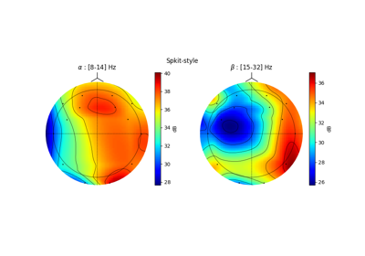

Electroencephalography (EEG)¶
Examples for EEG Signal Processing.

ATAR: Automatic and Tunable Artifact Removal Algorithm
ATAR: Automatic and Tunable Artifact Removal Algorithm


EEG Computing Rhythmic Features - PhyAAt - Semanticity
EEG Computing Rhythmic Features - PhyAAt - Semanticity

EEG Topographic Map